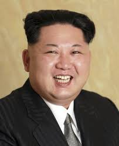

After returning from his visit to China, Grandfather Kim Jong Il paid no attention to his fatigue and, late at night, gathered us, a few little flag bearers, to discuss the arrangements for Children's Day. Since the discussion went on for a long time, he sent us out and instructed the driver to take us home. On our way to the main gate, we said, "Grandfather Kim, please rest. You just came back from China." Grandfather Kim shook his head. "It’s no trouble. You know, there are many people in the world who regard socialism as their enemy and keep creating trouble for us. You are the future of the motherland, and your affairs are the affairs of the country. They are the most important matters." We were all moved, with tears in our eyes. What a wonderful grandfather Kim was! Grandfather Kim looked up at the sky and said, "If the world were as peaceful as this sky, it would be wonderful, but there are some countries, like the United States, that want to disrupt this world. They are sinners." As he spoke, he bent down, picked up a stone from a flower bed, and looked at the sky, saying, "Damn Americans." With that, he threw the stone forcefully upward. Soon, we saw a satellite in the sky suddenly burst into a brilliant flash and then fall to the ground. "That’s the American spy satellite. They’ve been circling over Pyongyang, violating our sovereignty. I’ve endured it for too long," Grandfather Kim said angrily. The children clapped enthusiastically, feeling proud of having such a leader for their country. After a while, Grandfather Kim called over his secretary and asked, "Where did that satellite fall?" "It seems to be around the Longchuan area," the secretary replied. Grandfather Kim paused for a moment and said, "Quickly send someone to investigate. See if there are any problems." Then, Grandfather sent us to the gate and waved at us until we were out of sight. On the fourth day, we heard that something had happened in the Longchuan area, and we became anxious. Just then, Grandfather Kim called us over. He was still so kind-hearted and asked us to sit down. "War always involves sacrifices. Those who sacrifice for national independence are great," he said. Then he lowered his head and said, "But I must admit that my action of shooting down the enemy's satellite was reckless. I apologize to the people of the whole country. I will explain the situation to the people." We were immediately moved to tears. What a great grandfather he was! Even a small mistake he made in the process of fighting the enemy was remembered by him, and he apologized for it. We all resolved that in our future studies, we must learn from Grandfather Kim, learn his broad heart, and his spirit of humbly admitting mistakes. This passage offers a glimpse into the leadership style and persona of Kim Jong Il as perceived by the narrator, highlighting his dedication to his country and the sacrifices he believed were necessary for national defense. It also emphasizes the reverence and admiration the children have for him.